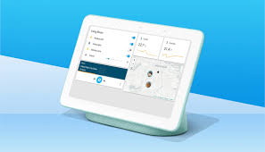
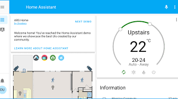
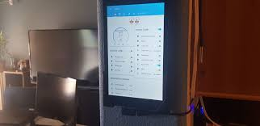
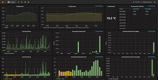
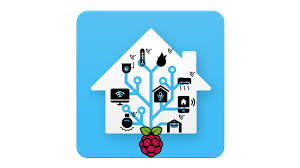
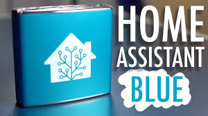
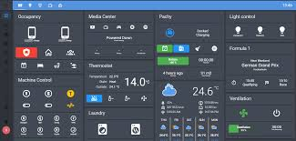
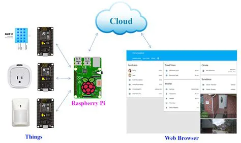
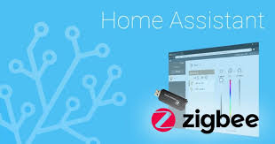

Prikaz kako Home Assistant može izgledati na tabletu.Prikaz kako Home Assistant aplikacjia izgleda i koje su sve mogućnosti.Prikaz kako je moguće složiti automatizaciju za grijanje i hlađenje.Tablet na zidu koji pokreće Home Assistant i prikaz kako to može biti praktično.Home Assistant prikaz grafova i koliko precizan Home Assistant može biti.Home Assistant se može pokrenuti i na Raspberry Pi-u.Home Assistant Blue je hub koji već ima preinstaliran Home Assistant.Home Assistant sada podržava i dark mode.Prikaz kako Home Assistant radi i komunicira sa uređajima.Home Assistant od sada ima i zigbee integraciju.